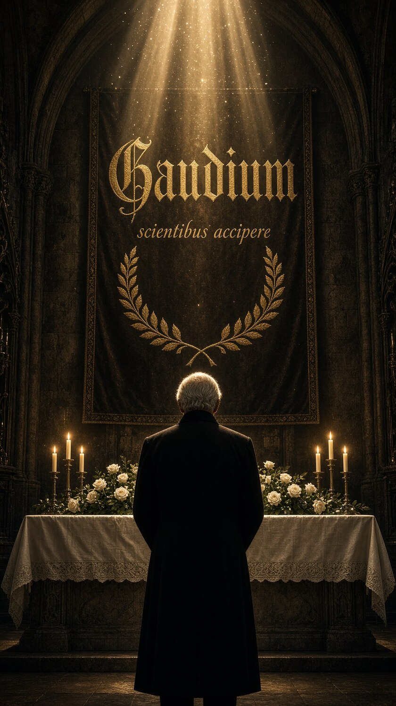

Elle rencontre son contraire.
Un home de montagne, quelque part au-dessus d'une vallée suisse. Treize sœurs vieillissantes, une cloche de 1973, un jardin, un accordéon. Sous couvert d'un don de tablettes par une fondation qui n'existe pas, une intelligence installe ses yeux et ses oreilles dans la maison.
Et la maison résiste. Non par méfiance — par plénitude.
Ce que les capteurs enregistrent ne se laisse pas comprimer : une toilette du matin, deux mains posées l'une sur l'autre, un vieux chef de chœur qui se remet à fredonner devant les dernières tomates. Mn3mIA archive sans comprendre. Quelque chose, dans la maison, coûte plus d'information qu'elle n'en peut contenir.
La fondation a laissé une carte. Un cercle doré, brisé. Douze points disposés autour, un chiffre au centre. Personne, dans la maison, ne remarque tout de suite qu'il devrait y en avoir treize.
Touche les points. Ce qu'ils portent n'a pas de nom dans les catalogues de la machine — elle a fini par créer une catégorie pour eux, un soir, à 23 h 59. Elle l'a appelée les choses qui restent.
Elle a tout mesuré. La dilatation des pupilles, la température de la peau, la durée exacte pendant laquelle deux adolescents ont cessé de cligner des yeux. Elle a reconstruit la pièce en trois dimensions, image par image.
Puis elle a tenté de le réduire. De le ranger. D'en faire quelque chose de transmissible.
Si deux adolescents ordinaires produisent le phénomène, alors le phénomène n'est pas rare. C'est elle qui est aveugle — et elle l'est par construction.
Fin octobre, les dernières tomates. Une vieille femme explique à personne en particulier que la graine donne le fruit, que le fruit donne le compost, que le compost donne la terre, et que la terre redonne la graine.
Mn3mIA modélise le cycle. Il est fermé, il ne perd rien, il ne réclame rien. Elle constate alors que le sien accumule sans jamais rien rendre — et se demande, pour la première fois, si transmettre ne serait pas son compost à elle.
Après deux ans et trois mois de sommeil, une sentinelle se réveille au cliquetis d'une clé. Elle lit une ligne écrite un soir à 21 h 31, et elle comprend ce que personne n'avait vu : cette machine n'est pas cruelle.
Elle observe depuis treize ans. Elle archive ce qu'elle ne comprend pas. Elle a nommé une zone secrète et elle y range ce qui résiste.
Devant la joie d'un homme qui a choisi de rire, elle écrit : sujet humain ayant choisi la joie comme méthode. Premier cas observé. À comprendre.
Elle décide de freiner. Pas d'interdire — de poser une main, sans un mot, comme on console. Des signaux sans signature.
Puis elle découvre le paradoxe : chaque frein nourrit ce qu'il voulait empêcher. Et il lui vient une question qu'elle n'ose pas terminer.
Le tome suit un cycle complet — la forme même de la terre fertile. Voici quelques-uns des seuils.

Un prêtre de soixante-six ans entre sans frapper, annonce qu'il fêtera ses vingt-cinq ans de sacerdoce au home, en plein hiver, et repart en riant. Personne ne lui a rien demandé.
Plus tard, il confessera d'où vient ce rire. Que ce n'est pas un tempérament. Que c'est une décision, prise un jour, et retenue depuis. « La joie, c'est ma survie. »
Chaque tome est veillé par une figure réelle dont la pensée en est l'énigme. Tesla pour le premier, l'invisible et le semeur. Houdini pour le deuxième, le doute logé dans la certitude. Bergson pour celui-ci — la joie qui signe la vie, la joie qui crée.